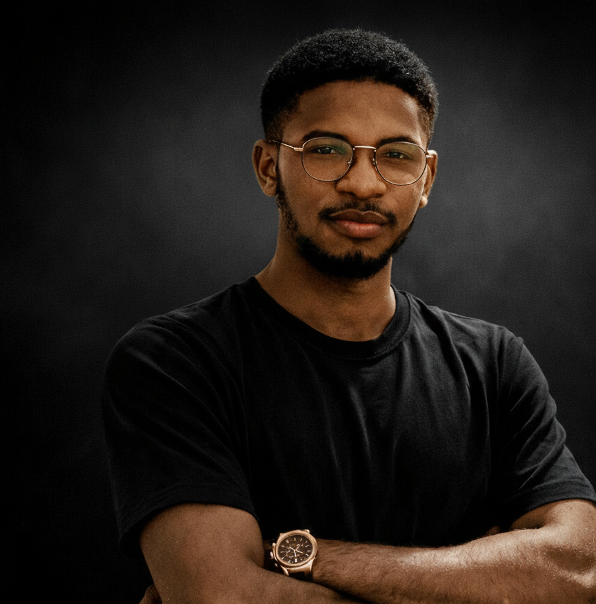
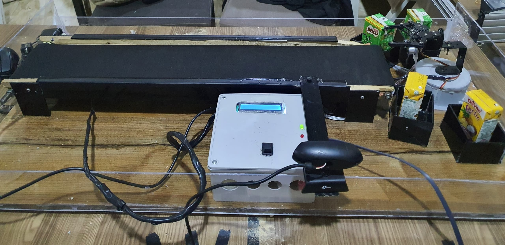
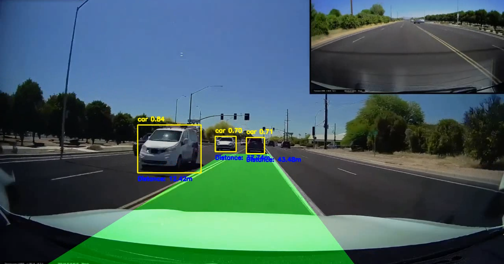
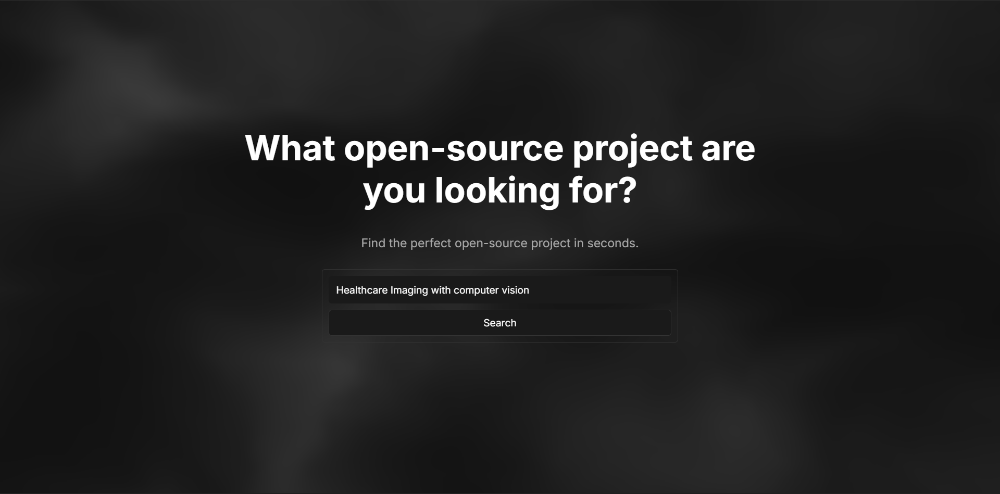
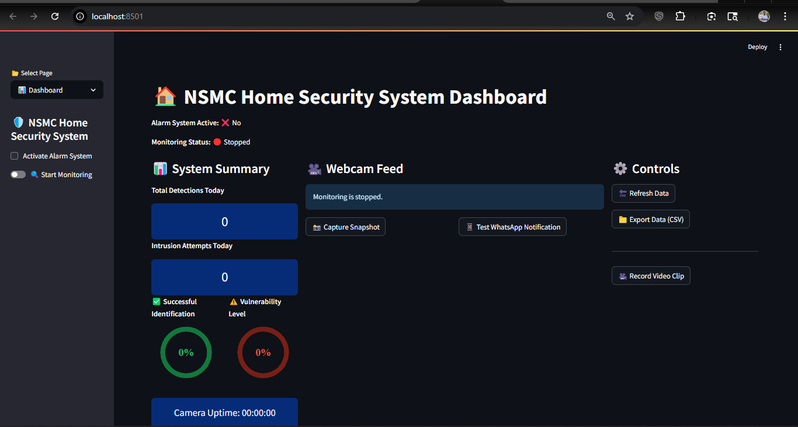
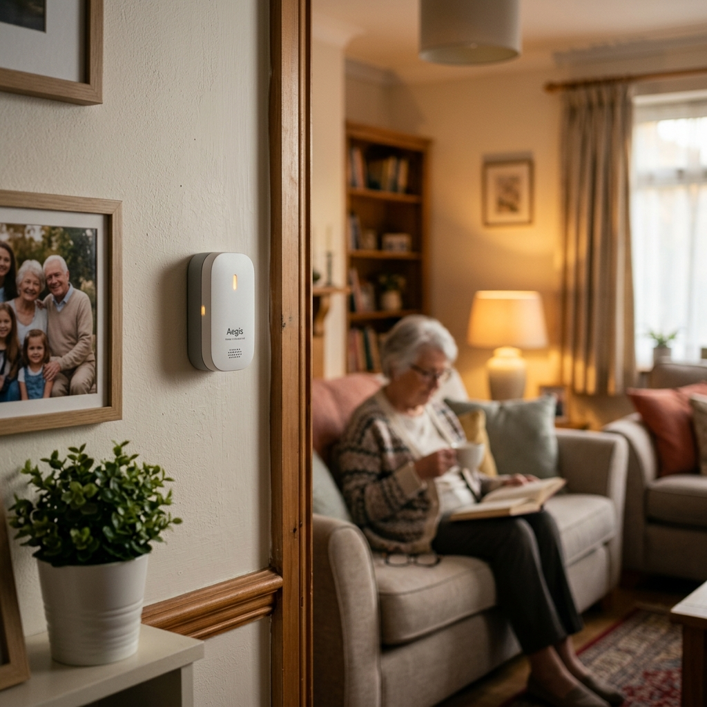

I graduated with a 4.86/5.0 GPA in Mechatronics Engineering from the AirForce Institute of Technology (AFIT), Kaduna. I led the AI Research Team at AFIT, focusing on reinforcement learning, vision-language-action models, and low-cost robotic systems.
I'm passionate about building embodied AI systems that think, learn, and understand the world naturally, unifying machine learning, control theory, and cognitive science.
To build embodied AI systems that think, remember, learn continuously and understand the world around them just like how the human brain does this naturally.
B.Eng. Mechatronics Engineering, AirForce Institute of Technology (2025)
Overall Best Graduating Student, Mechatronics Engineering Department (2025)
Best Graduating Student, Foursquare National Church Fellowship

Integrating computer vision and robotics to automate industrial product sorting. Inspired by real-world challenges at FanMilk PLC, this system uses machine vision for real-time classification.

A comprehensive Advanced Driver-Assistance System integrating lane segmentation, object detection, and behavioral rules. Features an auto-mode for steering and throttle commands.
An interactive AI agent that allows users to add prompts to videos and interact with content in real-time, bridging the gap between passive viewing and active learning.


Real-time facial recognition system with a Streamlit dashboard, intrusion alerts, and WhatsApp notifications via CallMeBot API.

IoT safety system using ESP8266 and MPU-6050 sensor. Detects falls via acceleration/orientation changes and sends alerts via IFTTT Webhooks.